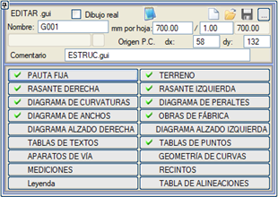
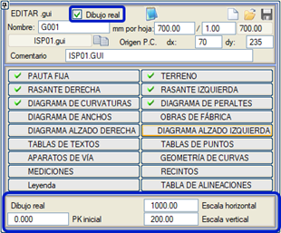
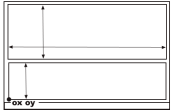

| |
|
BOYKESİT PAFTALARI İÇİN ŞABLONLAR
|
.gui ("gitar" veya boykesit bilgi bandı) dosyaları, boykesitin nasıl oluşturulacağına dair bilgileri içerir. Kullanıcı mevcut olanları değiştirebilir veya yenilerini oluşturabilir. Bu dosyaların ASCII formatında olması nedeniyle herhangi bir metin düzenleyiciden değiştirilebilmesine rağmen, BOYKESİT PAFTALARI menüsündeki [.gui Düzenle] seçeneğinden interaktif olarak yapılması önerilir. 
Bu menüde, çizimleri oluşturmak için işlenebilecek bilgi gruplarını kontrol eden farklı seçenekler bir araya getirilmiştir. Program kütüphanesinde, genellikle kullanıcının istediği şablonu elde edene kadar daha sonraki düzenlemeler için iyi bir başlangıç noktası olan çeşitli .gui dosyaları mevcuttur. Mevcut boykesit bilgi bandı kataloğuna BURAYA tıklayarak ulaşabilirsiniz. Sabit Kılavuz Çizgileri
Arazi Kırmızı Kot (Proje Kotu) Yatay Kurp Diyagramı Dever Diyagramı Genişlik Diyagramı Sanat Yapıları Boykesit Diyagramı Metin Tablosu Nokta Tablosu Makaslar ve Hat Elemanları Kurp Geometrisi Metrajlar Alanlar Lejant Güzergah Elemanları Tablosu Boykesit Pafta Şablonu Düzenleyicisinin Genel Özellikleri [Yükle]  seçeneği, düzenlemek için mevcut .gui dosyalarını art arda seçmenize olanak tanır ve en son seçilen yüklenmiş kalır. Seçim yapıldıkça, yüklemeden önce her şablonun bir modeli gösterilir. seçeneği, düzenlemek için mevcut .gui dosyalarını art arda seçmenize olanak tanır ve en son seçilen yüklenmiş kalır. Seçim yapıldıkça, yüklemeden önce her şablonun bir modeli gösterilir.Varsayılan olarak oluşturulacak gelecekteki şablon dosyasının adı olarak G001 adının sunulduğunu hatırlamak çok önemlidir. Bu nedenle, düzenleme yapmadan önce Ad alanında belirtilmelidir.  butonu, yüklenen .gui dosyasının adını çıktı dosyası için ad olarak kopyalar. butonu, yüklenen .gui dosyasının adını çıktı dosyası için ad olarak kopyalar. .gui dosyası, [Kaydet]  butonuna basıldıktan sonra oluşturulacak ve birincil olarak ayarlanmış kütüphanede saklanacaktır. Eğer kaydedilen şablon, çizim için kullanılanla aynı ise, otomatik olarak yeniden yüklenir. butonuna basıldıktan sonra oluşturulacak ve birincil olarak ayarlanmış kütüphanede saklanacaktır. Eğer kaydedilen şablon, çizim için kullanılanla aynı ise, otomatik olarak yeniden yüklenir. simgesiyle, düzenlenmekte olan dosyayı ikinci veya üçüncü kütüphaneye kaydetmek mümkündür. simgesiyle, düzenlenmekte olan dosyayı ikinci veya üçüncü kütüphaneye kaydetmek mümkündür.[.gui Düzenle]'ye girildiğinde, o anda kullanımda olan dosyalar, yani en son kullanılmış olan, otomatik olarak ISPOL.gui olarak yakalanır. Düzenleyiciler içinde, bir dosya yüklendiğinde veya veriler değiştirildiğinde ISPOL.gui dosyası değiştirilir, böylece çıkışta, kaydetmeye gerek kalmadan, boykesit çizimi için veya düzenleyicilere tekrar girmek için kullanılabilir hale gelir. Butonlardan birine her tıklandığında, kavramsal olarak ilişkili bir dizi seçenek ve öğe sunan bir alt menüye erişilir. Bu menüler, kullanıcının çizim sistemini benzer çalışma alanlarında yapılandırmasına olanak tanır. Tüm bu diyalog kutularında, sistemin kontrolünü bir önceki noktaya geri döndüren bir [Geri] tuşu sunulur. Not defteri simgesinden  seçtiğimiz .gui dosyasını doğrudan düzenleyebiliriz. seçtiğimiz .gui dosyasını doğrudan düzenleyebiliriz.Çarpı simgesinden  o anda yüklenmiş olan verileri sıfırlayabiliriz. o anda yüklenmiş olan verileri sıfırlayabiliriz.Alt menülerin solunda görünen farklı onay işaretleri, ilgili alt menünün boykesit bilgi bandımız için önemli bilgiler içerdiğini gösterir. Boykesit çizimi için bilgi bandının düzenlenmesi, mevcut güzergahın bir kesiminin gerçek çizimi üzerinde yapılabilir. Bunun için Gerçek çizim kutucuğunu etkinleştirmemiz gerekir. Bu durumda, başlangıç kilometresi ile yatay ve düşey ölçekler seçilebilir. Bir sayfanın tüm elemanları oluşturulur ve üzerlerinde durarak özellikleri sorgulanabilir. 
Pafta başına boyut ve çizim koordinat başlangıcının belirtilmesi Program, varsayılan olarak mm cinsinden bir boyut sunar. Bu boyut, çalışma ölçeğiyle çarpıldığında her paftada çizilecek uzunluğu verir (örneğin, 700 mm, 1/1000 ölçekte 700 m sağlar). Çizim için mevcut alanın sol alt köşesinden başlayarak, dx ve dy, grafiksel boykesitin başlangıcının göreceli koordinatlarıdır. dy konumundan aşağısı, boykesit bilgi bandı (gitar) için ayrılmış alandır. Her pafta içinde, hem boykesiti hem de ona karşılık gelen plan parçasını birlikte çizme imkanı vardır. Plan ve boykesit için kullanılacak boyutları tanımlayan veriler, [Arazi] → [Parametreler] alt menüsünde tanımlanır. Program, bu 700 metreyi çevreleyen dikdörtgeni en uygun şekilde belirler, ancak mevcut pencerenin dikey boyutu verisine (bilgi bandı tanımından sağlanır) ihtiyaç duyar. Aşağıdaki şekilde, programın alt sayfaları otomatik olarak nasıl atadığı görülebilir: 
|